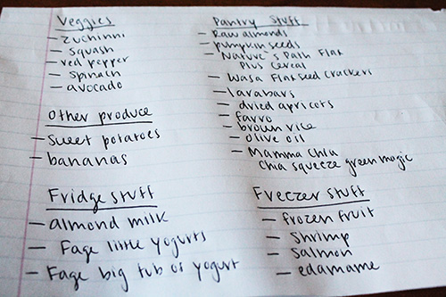
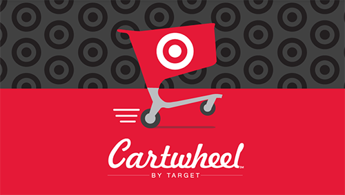
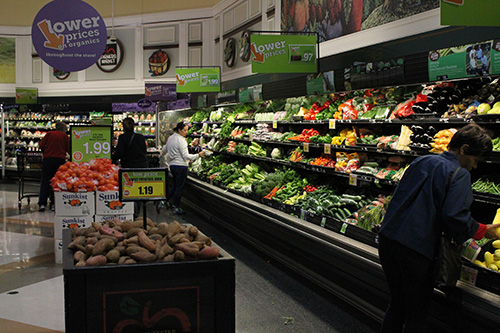
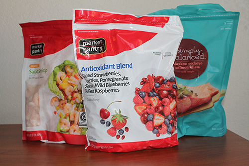
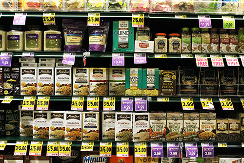

Shopping Healthy on a Budget 101
There are two eternal struggles for college students: not depleting your small bank account every week and stopping your never ending hunger. When you can hardly afford much needed toilet paper, you are going to choose the cheapest food options no matter the nutrition content or how it makes you feel after. Don’t fall into this trap; you don’t have to sacrifice your bank account and your health. Follow these steps below to shop for nutritious, delicious food and still have some leftover money for that movie you’ve wanted to see for months.
-
1. Make a List

-
2. Sign Up to Save

-
3. Shop Smart

-
4. Buy What’s in Season
-
5. Frozen is Best

-
6. Embrace Whole Grains

You’ve had a long week your mind isn’t thinking about what’s in your fridge and cabinets. You just see that pint of mint chocolate chip ice cream that you have been craving in the frozen foods section. To keep your healthy eating goals on track, make and follow a grocery list.
The key to the best grocery list includes looking at your kitchen to make sure you are buying things you actually need, ordering it by foods that are next to each other so you aren’t running all over the store, and making a balanced list that covers whole grains, protein, healthy fats and lots of veggies.
You don’t need to keep a messy coupon drawer to score deals. Many grocery stores offer special deals for devoted members and students get even bigger bargains. Harris Teeter, Target, Company Shops Market and Lowe’s Foods offer great deals for Elon students.
At Harris Teeter you can sign up for a student membership that offers a 15% discount at every purchase just with your phone number. Plus you have access to normal Harris Teeter members’ discounts. Download Target’s Cartwheel App to access tons of coupons. Add up to 18 coupons to your cartwheel and simply let the cashier scan your barcode. Lastly, Company Shops Market and Lowe’s Foods are both Phoenix Card vendors. Use this to your advantage by asking your parents to load money onto your card, so you don’t have to use your cash or debit card. Company Shops Market also has giveaways if you follow their Facebook account and sometimes they offer 15% off for students.
Think grocery stores are designed randomly? Think again. Use a grocery store’s strategic layout to your advantage. The outside of the store usually consists of produce, dairy, and the meat and seafood departments. Shop on the outside of the store to find non-processed, fresh and whole foods. Load up on these healthy staples for the bulk of your shopping.
Don’t forget to change your perspective when shopping. The pricier food is usually at eye-level to make it easier for customers to choose these products over cheaper products even though they usually are the same quality.
Fruits and vegetables are cheaper when they are in season. Don’t stock up on the tiny cartoon of $4 blueberries in the winter, instead choose fruits that are in season such as apples and oranges for the fall and winter. To figure out what produce is in season look it up before you make your list. If you are shopping for the fall check out the Fresh for November to discover what should be on your grocery list for the season.
If your favorite foods are out of season don’t fret, you can still have them; they just may be in frozen form. One of my favorite tricks is buying frozen fruit over normal fruit for a cheaper, larger quantity and longer lasting option. Another option is to freeze food that is in season and save them for later when they are not in season.
There is an endless amount of delicious whole grains such as brown rice, whole-wheat pasta, faro and old-fashioned oats. They are also versatile, inexpensive and nutritious. What else could you want? They are also easy to buy in bulk, which makes them an even cheaper option.